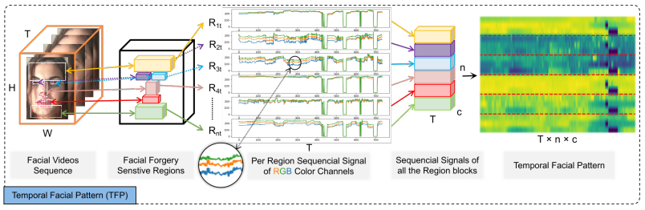
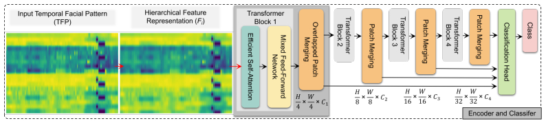
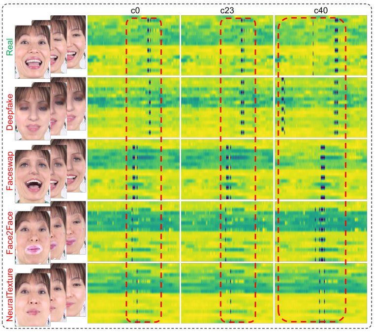
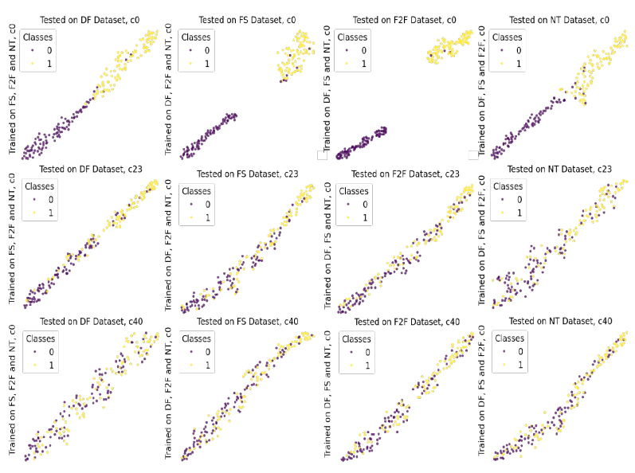
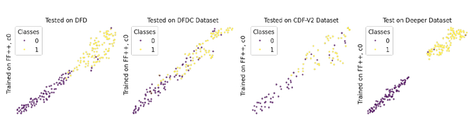

PUBLICATION论文 · Electronic Research Archive · 2024
ABSTRACT摘要
Current facial image manipulation techniques have caused public concerns while achieving impressive quality. However, these techniques are mostly bound to a single frame for synthesized videos and pay little attention to the most discriminatory temporal frequency artifacts between various frames. Detecting deepfake videos using temporal modeling still poses a challenge. 当前的人脸图像操纵技术在取得令人印象深刻质量的同时，也引发了公众担忧。然而，这些技术大多局限于合成视频的单帧处理，很少关注各帧之间最具判别性的时序频率伪影。使用时序建模检测深度伪造视频仍然是一个挑战。
We present a novel deepfake video detection framework that consists of two levels: temporal modeling and coherence analysis. At the first level, we devise an efficient temporal facial pattern (TFP) mechanism that explores the color variations of forgery-sensitive facial areas by providing global and local-successive temporal views. The second level presents a temporal coherence analyzing network (TCAN), which consists of novel global temporal self-attention characteristics, high-resolution fine and low-resolution coarse feature extraction, and aggregation mechanisms, with the aims of long-range relationship modeling from a local-successive temporal perspective within a TFP and capturing the vital dynamic incoherence for robust detection. 我们提出了一个新颖的深度伪造视频检测框架，包含两个层次：时序建模和一致性分析。第一层次，我们设计了一个高效的时序面部模式（TFP）机制，通过提供全局和局部连续时序视图来探索伪造敏感面部区域的颜色变化。第二层次提出了时序一致性分析网络（TCAN），包含新颖的全局时序自注意力特征、高分辨率精细和低分辨率粗糙特征提取与聚合机制，旨在从TFP内的局部连续时序视角进行长程关系建模，并捕捉关键动态不一致性以实现鲁棒检测。
Thorough experiments on large-scale datasets, including FaceForensics++, DeepFakeDetection, DeepFake Detection Challenge, CelebDF-V2, and DeeperForensics, reveal that our paradigm surpasses current approaches and stays effective when detecting unseen sorts of deepfake. 在FaceForensics++、DeepFakeDetection、DeepFake Detection Challenge、CelebDF-V2和DeeperForensics等大规模数据集上的全面实验表明，我们的范式超越了当前方法，在检测未见过的深度伪造类型时仍然有效。
METHOD方法
We employ an 81-point Dlib face detector to catch facial landmarks and determine six forgery-sensitive regions: forehead (landmarks 68–77), left eye (36–39), right eye (42–45), nose (27–35), mouth (48–67), and chin (4–12). For each region block, three temporal sequences are generated based on RGB color channel variations. A min-max normalization per sequence is applied, and the n temporal signals for each color dimension are arranged in rows to create a TFP of size T × n × c. This placement is designed with the patch embedding mechanism in mind, as used in conventional transformer models. 我们使用81点Dlib人脸检测器捕捉面部关键点，并确定六个伪造敏感区域：额头（关键点68-77）、左眼（36-39）、右眼（42-45）、鼻子（27-35）、嘴巴（48-67）和下巴（4-12）。对于每个区域块，基于RGB颜色通道变化生成三个时序序列。对每个序列应用最小-最大归一化，并将每个颜色维度的n个时序信号排列成行，创建大小为T × n × c的TFP。这种排列设计考虑了传统Transformer模型中使用的补丁嵌入机制。
The THTE generates multi-level features at {1/4, 1/8, 1/16, 1/32} resolutions that preserve the actual TFP resolution. Unlike ViT, which produces a uni-resolution cue map, our hierarchical representation extracts high-resolution fine-grained and low-resolution coarse features. We use overlapped patch merging (P=3, K=7, S=4) to maintain local continuity information crucial for temporal analysis, rather than the non-overlapping strategy that destroys time information hidden in each row. THTE在{1/4, 1/8, 1/16, 1/32}分辨率下生成多级特征，保留实际TFP分辨率。与产生单一分辨率线索图的ViT不同，我们的分层表示提取高分辨率细粒度和低分辨率粗粒度特征。我们使用重叠补丁合并（P=3, K=7, S=4）来保持对时序分析至关重要的局部连续性信息，而非会破坏每行中隐藏时间信息的非重叠策略。
To reduce computational complexity from O(N²) to O(N²/R), we employ a sequence reduction technique with reduction ratio R = [64, 16, 4, 1] from block 1 to 4. The mixed feed-forward network (mixed-FFN) replaces traditional positional encoding with a 3×3 depthwise convolution directly in the FFN to incorporate location information, avoiding the fixed-resolution limitation of ViT's PE. This allows the model to adapt to arbitrary resolutions without performance drops. 为了将计算复杂度从O(N²)降低到O(N²/R)，我们采用序列缩减技术，从块1到4的缩减比R = [64, 16, 4, 1]。混合前馈网络（mixed-FFN）在FFN中直接使用3×3深度卷积替代传统位置编码来融入位置信息，避免了ViT位置编码的固定分辨率限制。这使模型能够适应任意分辨率而不会出现性能下降。
The classification head fuses multi-level features from all four encoder blocks in the channel dimension, then predicts the output class via a single linear layer. This aggregation combines global and local attention, yielding explicit yet decisive representations for real and deepfake video classification. The entire TCAN model has only 3.3 million parameters and 8.4 GFLOPs, trained with AdamW (lr=5e⁻⁵), cosine annealing, and bfloat-16 mixed precision on an NVIDIA RTX 3090Ti. 分类头在通道维度上融合来自所有四个编码器块的多级特征，然后通过单个线性层预测输出类别。这种聚合结合了全局和局部注意力，为真实和深度伪造视频分类产生明确而决定性的表示。整个TCAN模型仅有330万参数和8.4 GFLOPs，使用AdamW（lr=5e⁻⁵）、余弦退火和bfloat-16混合精度在NVIDIA RTX 3090Ti上训练。

Fig. 2 — An illustration of TFP generation from a facial video. Facial forgery-sensitive regions are extracted, per-region sequential signals of RGB color channels are computed, and arranged into the Temporal Facial Pattern. © 2024 AIMS Press. 图2 — 从面部视频生成TFP的示意图。提取面部伪造敏感区域，计算每个区域的RGB颜色通道时序信号，并排列成时序面部模式。© 2024 AIMS Press。
Fig. 4 — THTE design illustration. The encoder processes TFP through transformer blocks with efficient self-attention, mixed feed-forward networks, and overlapped patch merging to produce hierarchical feature representations. © 2024 AIMS Press. 图4 — THTE设计示意图。编码器通过具有高效自注意力、混合前馈网络和重叠补丁合并的Transformer块处理TFP，以产生分层特征表示。© 2024 AIMS Press。RESULTS结果
Using leave-one-out evaluation on FF++ (c0), TCAN achieves a 98.82% average AUC across all four manipulation types (DF, FS, F2F, NT). This surpasses MSVT (97.34%), FTCN (96.26%), SeqFakeFormer (95.73%), and LipForensics (95.82%) — all while using only 3.3M parameters, compared to 26.5M–104M for competitors. TCAN achieves 99.16% on DF, 98.93% on FS, 99.03% on F2F, and 98.15% on NT. 在FF++ (c0)上使用留一法评估，TCAN在所有四种操作类型（DF、FS、F2F、NT）上达到98.82%平均AUC。这超越了MSVT（97.34%）、FTCN（96.26%）、SeqFakeFormer（95.73%）和LipForensics（95.82%）——同时仅使用330万参数，而竞争对手为2650万–1.04亿。TCAN在DF上达到99.16%，FS上98.93%，F2F上99.03%，NT上98.15%。
Trained on FF++ (c0) and tested on unseen datasets: TCAN achieves 91.09% AUC on DFD, 86.94% on DFDC, 88.99% on CDF-V2, and 98.80% on Deeper — with an average of 91.46%. On challenging DFDC, TCAN outperforms MSVT (76.79%), VDF (85.10%), and Audio-DF (82.31%). On Deeper, it achieves near-perfect detection (98.80%), surpassing all compared methods. This demonstrates that temporal information is crucial for cross-domain generalization. 在FF++ (c0)上训练并在未见数据集上测试：TCAN在DFD上达到91.09% AUC，DFDC上86.94%，CDF-V2上88.99%，Deeper上98.80%——平均91.46%。在具有挑战性的DFDC上，TCAN超越MSVT（76.79%）、VDF（85.10%）和Audio-DF（82.31%）。在Deeper上，它达到近乎完美的检测（98.80%），超越所有对比方法。这证明时序信息对跨域泛化至关重要。
At c23 (high-quality compression), TCAN maintains strong performance with an average AUC of 78.97%. At c40 (low-quality compression), performance drops to 70.81% average, which is expected due to lossy compression discarding high-frequency forgery artifacts. However, the temporal self-attention and feature fusion mechanisms positively influence robustness, maintaining usable detection even under heavy compression. 在c23（高质量压缩）下，TCAN保持强劲性能，平均AUC为78.97%。在c40（低质量压缩）下，性能下降至平均70.81%，这是由于有损压缩丢弃高频伪造伪影所致。然而，时序自注意力和特征融合机制对鲁棒性产生积极影响，即使在重度压缩下仍保持可用检测。
The TFP mechanism adapts to various backbones: ViT (93.46% avg AUC), RegNet (92.74%), SwinV2 (90.67%), BEiT (92.88%), and PoolFormer (94.55%). TCAN (95.71%) outperforms all, confirming that the TFP representation is backbone-agnostic and the dedicated TCAN design optimally exploits temporal coherence cues. TFP机制可适应各种骨干网络：ViT（平均93.46% AUC）、RegNet（92.74%）、SwinV2（90.67%）、BEiT（92.88%）和PoolFormer（94.55%）。TCAN（95.71%）超越所有方法，证实TFP表示是与骨干网络无关的，且专门的TCAN设计最优地利用了时序一致性线索。

Fig. 3 — A comparison of TFPs of real and deepfake videos with three compression levels (c0, c23, c40) from FF++. Deepfake videos generated with four manipulation methods show distinct temporal artifacts. © 2024 AIMS Press. 图3 — 真实和深度伪造视频在三种压缩级别（c0、c23、c40）下TFP的比较。使用四种操作方法生成的深度伪造视频显示出不同的时序伪影。© 2024 AIMS Press。
Fig. 5 — The t-SNE visualization depicts the learned feature space of classes predicted by our framework on cross-manipulation evaluation across three compression levels. Golden dots indicate real class; purple dots signify manipulated class. © 2024 AIMS Press. 图5 — t-SNE可视化展示了我们框架在三种压缩级别下跨操作评估中预测的类别学习特征空间。金色点表示真实类别；紫色点表示操纵类别。© 2024 AIMS Press。
Fig. 6 — The t-SNE visualization shows the learned feature space on cross-dataset evaluation (DFD, DFDC, CDF-V2, Deeper). The golden dots represent the real class, and the purple dots indicate the altered class. © 2024 AIMS Press. 图6 — t-SNE可视化展示了跨数据集评估（DFD、DFDC、CDF-V2、Deeper）上的学习特征空间。金色点代表真实类别，紫色点表示操纵类别。© 2024 AIMS Press。LIMITATIONS & FUTURE WORK局限性与未来工作
Compression sensitivity. Lossy JPEG compression at low quality (c40) discards high-frequency image details and textures that contain forgery artifacts. Our TFP mechanism relies on spatial information of facial videos, but compression makes it unable to extract features as sensitively as from uncompressed data. Future work could explore compression-robust feature extraction. 压缩敏感性。低质量（c40）有损JPEG压缩丢弃包含伪造伪影的高频图像细节和纹理。我们的TFP机制依赖面部视频的空间信息，但压缩使其无法像从未压缩数据那样敏感地提取特征。未来工作可探索压缩鲁棒特征提取。
Audio-visual integration. This work focuses solely on visual temporal clues. Multi-modal approaches that incorporate audio modality (e.g., lip-audio synchronization) could enhance detection robustness, particularly for videos with strong audio-visual correlations. 音视频整合。本工作仅专注于视觉时序线索。融入音频模态（如唇音同步）的多模态方法可增强检测鲁棒性，特别是对于具有强音视频相关性的视频。
Color space exploration. The current TFP uses RGB color space. Other color spaces (HSV, YCbCr, Lab) may capture different forgery-sensitive characteristics and could be explored to refine the temporal modeling design. 色彩空间探索。当前TFP使用RGB色彩空间。其他色彩空间（HSV、YCbCr、Lab）可能捕捉不同的伪造敏感特征，可探索以优化时序建模设计。
Visualization and interpretability. While t-SNE provides feature space visualization, a more direct visualization strategy that can help comprehend the mechanics behind deepfake video detection by transformer attention would be valuable for forensic practitioners. 可视化与可解释性。虽然t-SNE提供了特征空间可视化，但一种更直接的可视化策略——能够帮助理解Transformer注意力在深度伪造视频检测背后的机制——对取证从业者将很有价值。
BIBTEX引用
@article{amin2024analyzing,
author = {Amin, Muhammad Ahmad and Hu, Yongjian and Hu, Jiankun},
title = {Analyzing temporal coherence for deepfake video detection},
journal = {Electronic Research Archive},
year = {2024},
volume = {32},
number = {4},
pages = {2621--2641},
publisher = {AIMS Press},
doi = {10.3934/era.2024119}
}COPYRIGHT NOTICE版权声明
© 2024 the Author(s), licensee AIMS Press. This is an open access article distributed under the terms of the Creative Commons Attribution License. Permitting unrestricted use, distribution, and reproduction in any medium, provided the original work is properly cited. © 2024 作者，AIMS Press被许可方。本文根据知识共享署名许可条款以开放获取方式分发。允许在任何媒介中不受限制地使用、分发和复制，前提是正确引用原始作品。
This page is a personal academic landing page. The full paper is available via AIMS Press Electronic Research Archive. Figures are reproduced under the Creative Commons Attribution License. 本页面为个人学术着陆页。完整论文可通过AIMS Press Electronic Research Archive获取。图表根据知识共享署名许可转载。